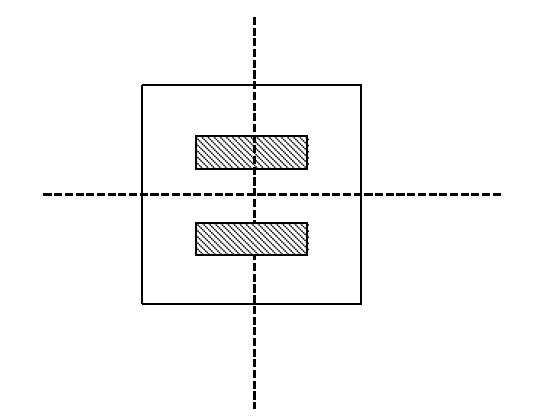

HDU4086. Harry Potter and the holy banquet
内存限制：2000/1000 MS (Java/Others) 时间限制：32768/32768 K (Java/Others)
题目描述
This year, the greatest magical school Hogwarts will celebrate its 2000th birthday. The school committee decided to hold a banquet that would invite all the students, teachers, alumnus and celebrities. Harry Potter and his friends took part in the "Banquet Preparatory Committee of Students" and he had been told to divide a huge celebration cake and to deliver it to the students in each house at the banquet.
The cake was pretty odd, which is obviously a familiar situation to us muggles in this magical world. It had only one level, and to look down the cake it was shaped as a polygon! Indeed, it was polygonal, not round. The top surface of the cake was mostly covered by cream. Besides cream, fruits and vegetables such as dragon fruit slides and pumpkin slides were used to decorate the cake's top surface. The oddest thing was that all of them were shaped as polygons. For example, the following figure shows a possible decoration of the cake, in which the white space was covered by cream while shadow space was covered by other food.

As we all know, Hogwarts had four houses which were named after their founders, Gryffindor, Hufflepuff, Ravenclaw and Slytherin. Harry needed to divide the cake into four pieces by using an incantation "Diffindo". By using "Diffindo" once, the cake would be divided by a straight line, so Harry needed to use the incantation twice in total in order to divide the cake into four. He also recognized that students in Hogwarts were crazy about creams. So he had to make the four pieces of cake covered by same area of cream.
Since the cake could not be done until the day of banquet, harry asked Professor
McGonagall to get the final design paper of the cake. In this paper, the top surface of the cake was demonstrated as a polygon in Cartesian coordination system. Incidentally, Prof McGonagall told Harry that the first incantation ("straight line") needed to paralleled to the x-axis because of some secret taboo.
13 Harry was confused about this task. He asked Ron Weasley and Hermione Granger to help him figure it out which two straight lines should be chosen. Their conversation was as follows:
Harry Potter: I'm wondering whether there is any solution in such strict constraints.
Ron Weasley: Um…perhaps there's more than one solution. What's your opinion, Hermione?
Hermione Granger: Hush! I'm working on it.
Could you help them work it out?
The cake was pretty odd, which is obviously a familiar situation to us muggles in this magical world. It had only one level, and to look down the cake it was shaped as a polygon! Indeed, it was polygonal, not round. The top surface of the cake was mostly covered by cream. Besides cream, fruits and vegetables such as dragon fruit slides and pumpkin slides were used to decorate the cake's top surface. The oddest thing was that all of them were shaped as polygons. For example, the following figure shows a possible decoration of the cake, in which the white space was covered by cream while shadow space was covered by other food.
As we all know, Hogwarts had four houses which were named after their founders, Gryffindor, Hufflepuff, Ravenclaw and Slytherin. Harry needed to divide the cake into four pieces by using an incantation "Diffindo". By using "Diffindo" once, the cake would be divided by a straight line, so Harry needed to use the incantation twice in total in order to divide the cake into four. He also recognized that students in Hogwarts were crazy about creams. So he had to make the four pieces of cake covered by same area of cream.
Since the cake could not be done until the day of banquet, harry asked Professor
McGonagall to get the final design paper of the cake. In this paper, the top surface of the cake was demonstrated as a polygon in Cartesian coordination system. Incidentally, Prof McGonagall told Harry that the first incantation ("straight line") needed to paralleled to the x-axis because of some secret taboo.
13 Harry was confused about this task. He asked Ron Weasley and Hermione Granger to help him figure it out which two straight lines should be chosen. Their conversation was as follows:
Harry Potter: I'm wondering whether there is any solution in such strict constraints.
Ron Weasley: Um…perhaps there's more than one solution. What's your opinion, Hermione?
Hermione Granger: Hush! I'm working on it.
Could you help them work it out?
输入格式
The input contains several test cases.
The first line of each test case is an integer N (N<=50) representing the number of edges of the cake's top surface (big polygon). Each of the following N lines contains two real numbers xi, yi (-1000 <= xi, yi <= 1000). They show N vertices of the polygon in clockwise order. The following line contains an integer M (M<=50), representing the number of small polygons that were not covered by cream. Then M groups of lines follow, describing M polygons (small polygons) in the same way of describing the big cake polygon.
The input guarantees that the number of vertices of these small polygons is less or equal to 50. All the small polygons are strictly inside the big cake polygon and will not touch the edge of the big polygon. Each of two small polygons will not overlap. In the big polygon, the area that is not covered by small polygons is all covered by cream.
The input file ends by N = 0.
The first line of each test case is an integer N (N<=50) representing the number of edges of the cake's top surface (big polygon). Each of the following N lines contains two real numbers xi, yi (-1000 <= xi, yi <= 1000). They show N vertices of the polygon in clockwise order. The following line contains an integer M (M<=50), representing the number of small polygons that were not covered by cream. Then M groups of lines follow, describing M polygons (small polygons) in the same way of describing the big cake polygon.
The input guarantees that the number of vertices of these small polygons is less or equal to 50. All the small polygons are strictly inside the big cake polygon and will not touch the edge of the big polygon. Each of two small polygons will not overlap. In the big polygon, the area that is not covered by small polygons is all covered by cream.
The input file ends by N = 0.
输出格式
For each test case, if there is no solution, output a string "No answer" in a line. If there is more than one legal cut solution, output a string "Multiple answers" in a line. Otherwise, output 6 real numbers in a line:
a1 b1 c1 a2 b2 c2
Where a1x+b1y+c1=0 is the equation of the first straight line which is paralleled to the x-axis , and a2x+b2y+c2=0 is the equation of the second straight line. To normalize the equations, you should make sure that for each ax+by+c=0, if the factor a is not 0, it must be 1. If a = 0 ,then b must be 1. All the real numbers are rounded to 4 digits after decimal point.
a1 b1 c1 a2 b2 c2
Where a1x+b1y+c1=0 is the equation of the first straight line which is paralleled to the x-axis , and a2x+b2y+c2=0 is the equation of the second straight line. To normalize the equations, you should make sure that for each ax+by+c=0, if the factor a is not 0, it must be 1. If a = 0 ,then b must be 1. All the real numbers are rounded to 4 digits after decimal point.
样例
样例输入
4
2 2
2 -2
-2 -2
-2 2
2
4
1 1
1 0.5
-1 0.5
-1 1
4
1 -0.5
1 -1
-1 -1
-1 -0.5
0样例输出
0.0000 1.0000 0.0000 1.0000 0.0000 0.0000
Hint
The figure of sample is as follows, in which the dashed lines demonstrate the two straight cut.
